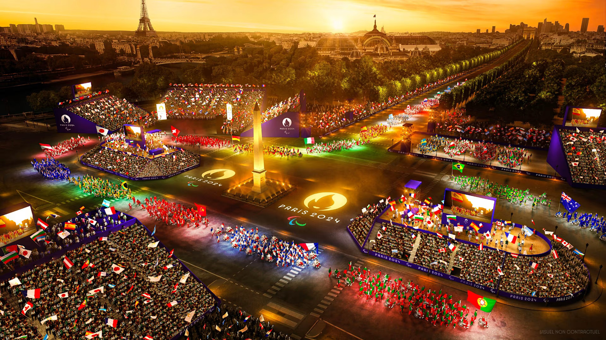
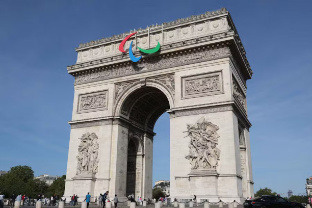
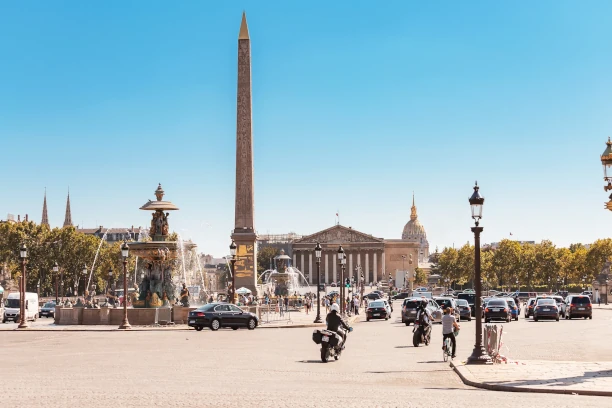
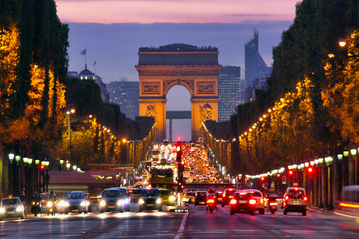
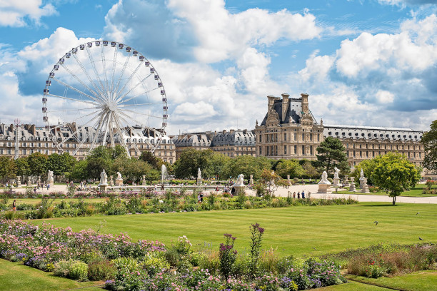
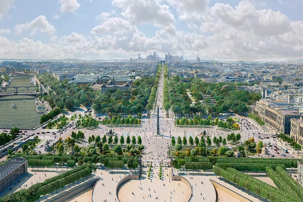
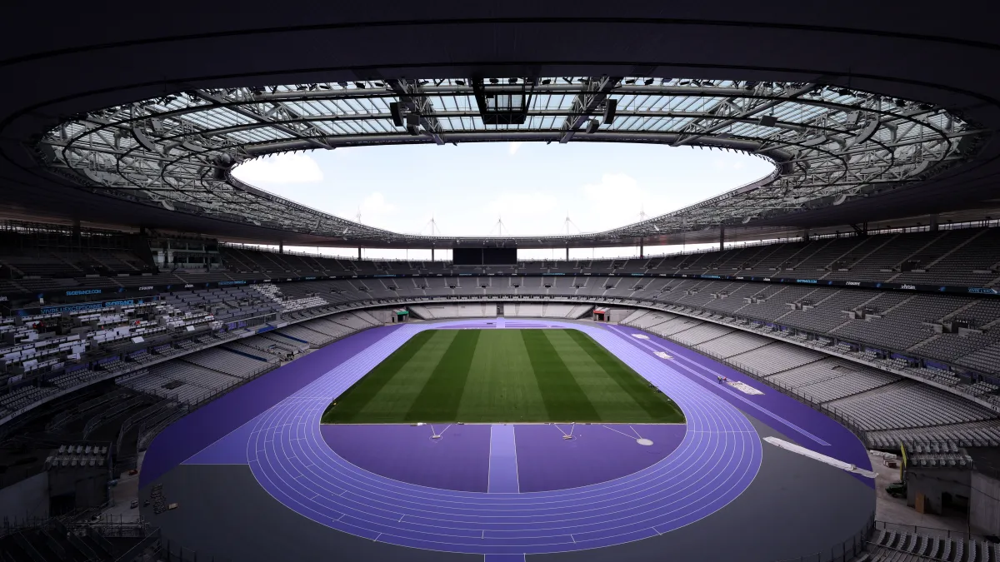

Os Jogos Paralímpicos de Paris 2024 estão chegando, e a França receberá o maior evento já organizado pelo país, sendo a primeira vez em solo francês. No dia 28 de Agosto até 8 de Setembro, a capital francesa contará com a presença de 184 Comitês Olímpicos Nacionais e pelo menos 4.400 paratletas representando suas nações, competindo em 22 esportes.
Vamos apresentar à vocês tudo o que ocorrerá nos Jogos Paralímpicos de Paris, onde será as Cerimônias de Abertura e Encerramento, os esportes e as modalidades, as instalações que receberão os paraatletas em busca das tão sonhadas medalhas olímpicas e muito mais!
Paris 2024
Cerimônia na Champs-Élysées
No dia 28 de Agosto, o mundo todo acompanhará a cerimônia de abertura em Paris, porém não irá acontecer em um estádio olímpico, mas na icônica Avenida Champs-Élysées, no coração da cidade de Paris. As apresentações e o desfile dos atletas irão acontecer ao longo da Champs-Élysées partindo parte inferior da avenida seguindo até a icônica Place de la Concorde.

Os Jogos Paralímpicos de Paris 2024 serão os primeiros a ter uma cerimônia de abertura fora de um estádio. Foto: Paris 2024 / Florian Hulleu.
Durante a cerimônia de abertura, os atletas desfilarão por alguns dos mais belos marcos da capital francesa, como o icônico Arco do Triunfo, a cidade do Louvre, o Jardin des Tuileires e o Jardins des Champs-Élysées.
-
 -
 Place de La Concorde
-
 Avenue Champs-Élysées
-

Cidade do Louvre
-
 Jardin des Tuileires
-
 Jardins des Champs-Élysées
Já a cerimônia de Encerramento irá acontecer no dia 8 de Setembro e o palco será o Stade de France, que está localizado em Saint-Denis, na Região Metropolitana de Paris, este será único evento que irá acontecer no estádio-sede, para encerrar este ciclo olímpico.

Stade de France - Foto: Getty Image.
Sobre as Paralímpiadas
A Chama do Olímpio
A Tocha Olimpica, desenvolvida pelo designer Mathieu Lehanneur, onde na criação ele
inspirou-se em três pilares: Paris, igualdade e paz.
Segundo Lehanneur, os três pilares que ele se inspirou tem significado, onde a igualdade está representada na simetria das formas da tocha. Já Paris, está representada pelas águas Rio Sena, um local icônico e estando no coração da cidade, e a Paz foi representada a partir de pensar como o símbolo de fraternidade é generosidade.
A tocha será usada no Revezamento dos Jogos Olímpicos e Paralímpicos, a chama foi acessa em Olímpio, na Grécia, irá sair do país navegando pelo Mar Mediterrânio à bordo do Veleiro Belem, indo em direção para Marseille, no sul da França. A trajeto da tocha passrá por 400 cidades Francesas, e irá atravessar os Oceanos Atlântico, Índico e Paícfico, passando pelos territórios ultraminhos da França, são eles: Guiana Francesa, Guadalupe e Martinica, na América, a Polinésia Francesa e a Nova Caledônia, na Oceânia e a Ilha da Reunião, na África.
Os Phryges
Os Phryges são os mascotes dos Jogos Olímpicos, eles tem um forte significado para os franceses: a Liberdade. Os designers se inspiraram nos barretes frígio, uma espécie de touca ultilizada por franceses na época da Revolução Francesa e também um símbolo da República Francesa, e isso deu origem aos personagens.
Paris divulgou dois mascostes, o Phryge Olímpica e o Phryge Paralímpica, que apresenta uma deficiência física visível como forma de inclusão de pessoas com deficiência.